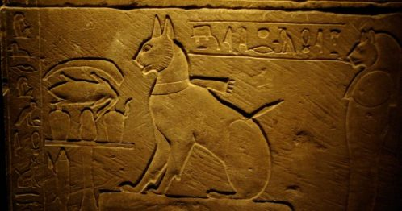

A macskák hol kisebb, hol nagyobb mértékben, de már nagyon régi idők óta jelen vannak az ember életében. Ha a macskák szerepét kutatjuk az ókori vallásokban, először is külön kell választani a kisebb testű házi macskákat a nagyobb testű, vad macskaféléktől (mint például az oroszlánok, a gepárdok vagy a pumák). A nagy macskák ugyanis – ragadozó életmódjukból kifolyólag – a hatalom és a hadviselés szimbólumai, egyben az uralkodók fő jelképei voltak. A kisebb házi macskák a házi tűzhely és az otthon melegét jelképezték. A házi macskák gyorsan szaporodnak, ezért az odaadó anyaság, a termékenység és egyben a promiszkuitás (gondoljunk csak a „bagzó macskák” kifejezésre) szimbólumaivá is váltak. Mivel távol tartják a házaktól a rágcsálókat, ezért ősidőktől a ház védelmezőinek tartották őket.
Ókori egyiptom, mint tudjuk, az ókori kultúrák közül az egyiptomi panteon az, ahol a macskáknak különleges hely jutott, és ahol a legnagyobb tekintélynek örvendtek. Kezdetben csak szent állatként, mégpedig Básztet istennő szent állataként tisztelték a macskákat – olyannyira, hogy elpusztításuk halálbüntettés vont maga után. A macskakultusz ősidők óta az egyiptomi kultúra része volt
Minószi civilizáció, bár az egyiptomiak tiltották szeretett macskáik exportálását, mégis akadtak bátor csempészek és kereskedők, akik a szent állatokat ellopták. Minden bizonnyal kereskedőhajókon jutottak el a macskák a görög szigetekre. Az ókori görögök és rómaiak között azért nagy különbség volt: míg Egyiptomban a macskákat istenként tisztelték, addig a görögöknél csak „házi” szerephez jutottak. (A nagyobb macskafélék, mint például a gepárd, az oroszlán és a párduc már kiemelt szerepet kaptak a görög mitológiában.)
Az ellentétes rómaiak, jelleme még kevésbé tudott azonosulni a macska tulajdonságaival. Az olyanok, mint a kötelességérzet, engedelmesség, lojalitás, melyek a rómaiak számára különösen fontosak voltak, a macskákból teljes mértékben hiányoztak. A macska – természetéből kifolyólag – a római erényeknek épp az ellenkezőjét képviselte: a szabadság, a függetlenség, az önállóság szimbóluma volt.
